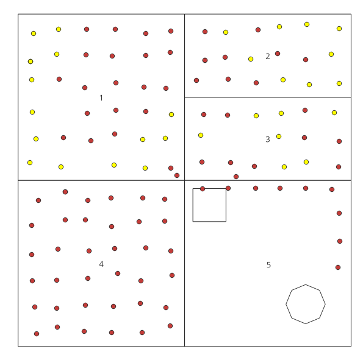
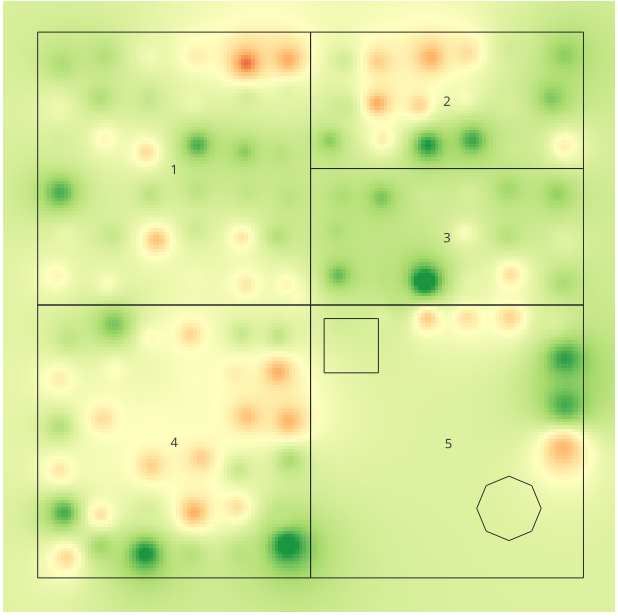
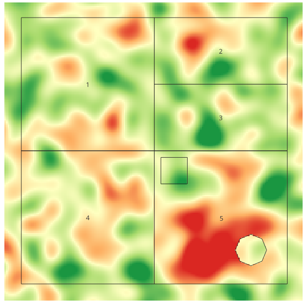
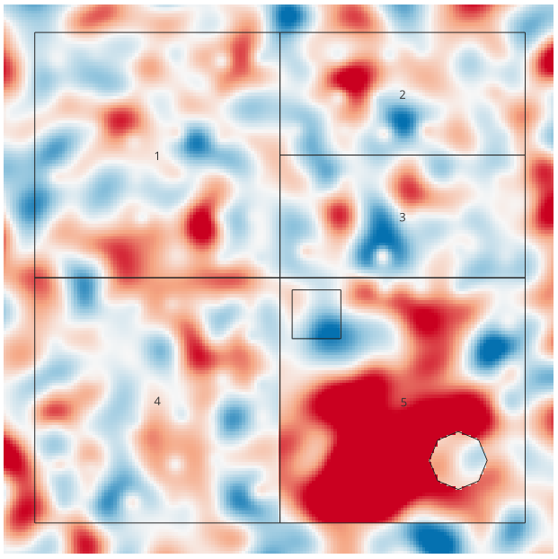

Lab 5 · November 2026
Farming alfalfa and corn: What the samples say, and what the map says for them
The question
Can Field 5, unused since 2019, grow corn? We have 118 soil samples. The goal is to filter them according to the agronomist's rule, fill the gaps between them using Inverse Distance Weighting (IDW) and then check our interpolated map against the truth to see exactly where and why the map fails.
The data
Two files, loaded into QGIS in EPSG:32614:
- Fields and samples —
LAB05_simplified_farm.gpkg. Five field polygons and 118 soil samples. - Truth raster —
LAB05_truth-p.tif. The real phosphorus of every 10 m cell on the farm, used as the answer key.
The samples layer had P on two different scales (batch B used a percentage scale, while batch A used a fraction). I fixed this by creating a new field, P_fix, using the Field Calculator.
The method
- Attribute Query. Selected samples suitable for corn based on three conditions: pH between 6 and 7, P between 0.25 and 0.80, and K between 1.8 and 2.9.
- Units Fix. Used the Field Calculator to create
P_fixwith the expressionCASE WHEN "batch" = 'B' THEN "P" / 100 ELSE "P" END, then reran the query. - IDW Interpolation. Ran the IDW interpolation tool on the
P_fixattribute (Distance coefficient P = 2.0) with a 10 m pixel size, saved asidw_p2.tif, and styled it with a RdYlGn color ramp (Min 0, Max 0.8). - Raster Calculator. Subtracted the truth from the IDW map (
"idw_p2@1" - "LAB05_truth-p@1") to createerror_p.tif, styled with an inverted RdBu ramp (Red = overestimation).
The map
Figure 1: The 31-sample selection

Figure 2: IDW power 2 beside the truth


Figure 3: The error map

What I found
| Question | Answer |
|---|---|
| Q1 | The rows with batch B (Platte Valley lab) in Fields 4 and 5 use the larger percentage scale, while the other batch uses the 0–1 fraction scale. |
| Q2 | 31 samples suit corn using P, and 46 suit corn using P_fix. The 15 extra samples are in Fields 4 and 5. |
| Q3 | Field 5 is 333m from the nearest sample, and Field 1 is 126m. The map will be least trustworthy in the south-west interior of Field 5 because it is the furthest from any data point. |
| Q4 | No. None of the three powers show a phosphorus problem inside Field 5. The maps mark 0.0, 0.2, and 3.6 acres below the minimum, completely missing the truth (60.6 acres). |
Reflection and AI-usage disclosure
The written reflection and the AI-usage disclosure are submitted through Brightspace.
← Back to all labs